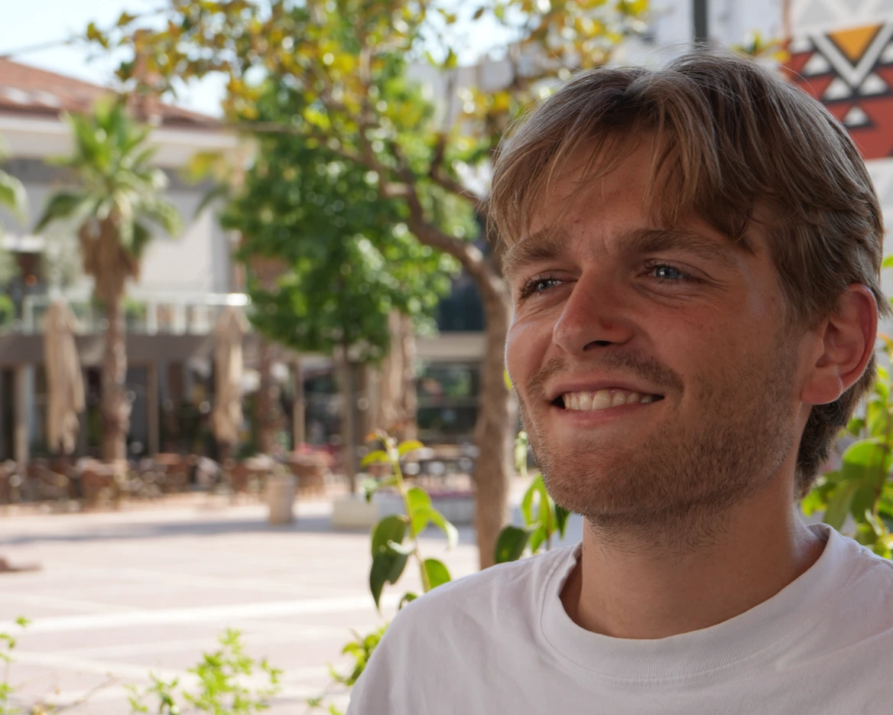
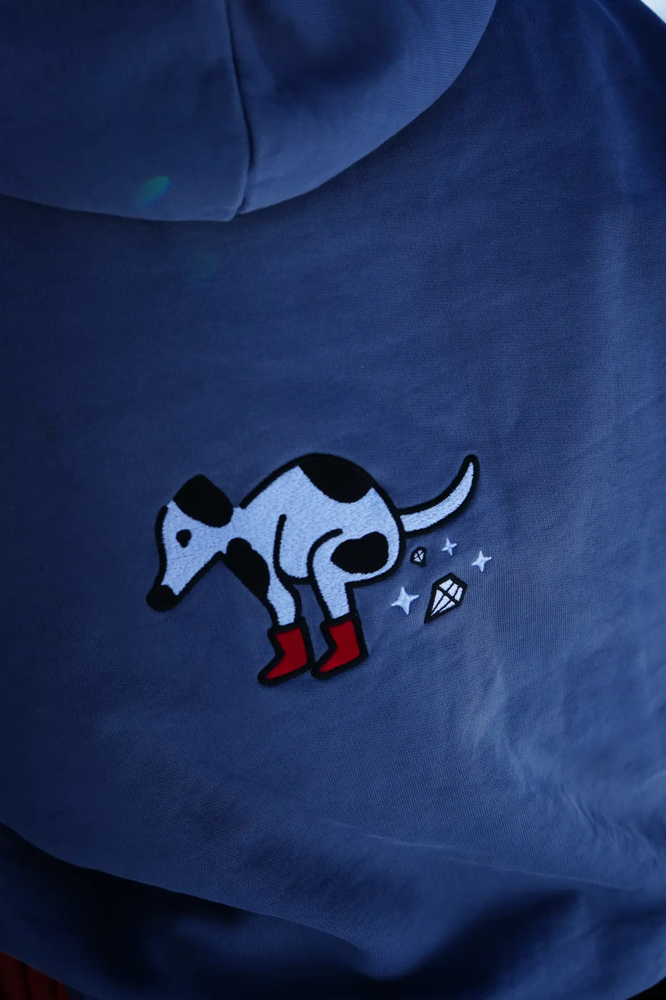
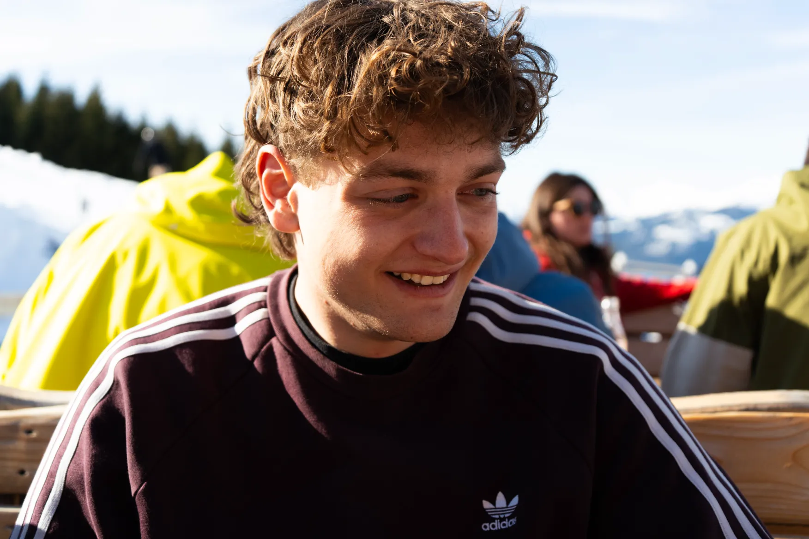
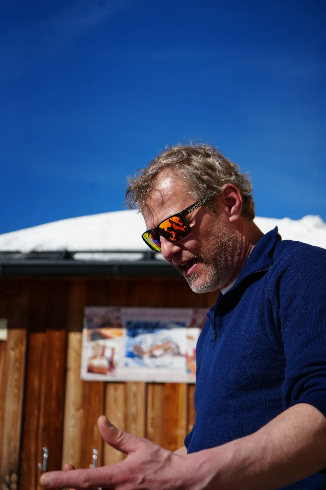

Over mij
Mijn naam is Gijs. Op deze website verzamel ik mijn fotografie: van persoonlijke portretten tot vrij werk en commerciële opdrachten.
Ik hou van spontane beelden met warmte en karakter. In mijn werk zoek ik naar momenten die echt voelen en lang blijven hangen.
Voor mij draait fotografie om mensen vastleggen zoals ze zijn. Ik vind het belangrijk dat de mensen die ik fotografeer met een lach kunnen terugkijken op het moment dat we samen hebben vastgelegd.
Opdrachten
In mijn opdrachten fotografeer ik momenten en verhalen voor anderen. Denk aan bruiloften, evenementen of andere projecten waarbij het vastleggen van sfeer, emoties en herinneringen centraal staat. Elke opdracht is anders, en juist dat maakt het werk zo interessant.
Met aandacht voor licht, compositie en het juiste moment probeer ik beelden te maken die niet alleen laten zien wat er gebeurt, maar ook het gevoel van het moment overbrengen. Of het nu gaat om een grote dag zoals een bruiloft, een bijzonder evenement of een ander project: mijn doel is om foto's te maken die de sfeer en het verhaal van dat moment echt laten spreken.
Samen kijken we naar wat belangrijk is om vast te leggen, zodat de beelden niet alleen mooi zijn, maar ook betekenisvol blijven om later op terug te kijken.




Kunst
Vrijheid blijheid! In mijn kunstfotografie laat ik mijn creativiteit de vrije loop. Zonder regels of verwachtingen ga ik op zoek naar beelden die mij inspireren en die iets laten voelen.
Hier experimenteer ik met licht, compositie en moment om foto's te maken die anders zijn dan mijn opdrachtwerk.
Contact
Ben je geinteresseerd? Neem dan contact met mij op, en dan kijken we samen wat ik voor je kan betekenen.